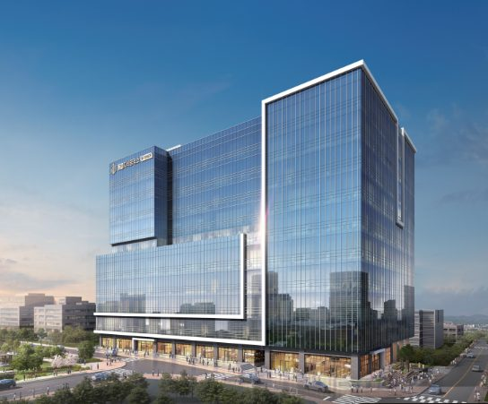

평택 지식산업센터 한눈에 보기
평택 지식산업센터, 어디에 몇 곳 있을까
평택에서 준공돼 운영 중인 지식산업센터는 22곳입니다. 고덕국제신도시와 지제역 주변 두 권역에 대부분이 모여 있고, 권역마다 땅의 성격과 호실 구성이 다릅니다. 사옥이나 작업장을 찾는 기업이 먼저 알아 두면 좋은 권역별 특징을 정리했습니다.
평택 지식산업센터 권역
📍 고덕면 해창리, 고덕동
🏢 택지 내 도시지원시설용지 (준주거지역) · 산단 밖
📍 모곡동(송탄산단), 세교동(평택산단)
🏢 일반산업단지
📍 진위면 갈곶리
🏢 진위2일반산업단지
📍 포승읍, 청북읍
🏢 –
※ 단지 수 · 연면적 비중
출처: 한국산업단지공단 전국지식산업센터현황(2025.6.30), 윤성디앤씨 현장 확인(2026.10)
고덕국제신도시
삼성전자 평택캠퍼스와 신도시 생활권에 가까운 택지 안 도시지원시설용지입니다. 제조면적 비중이 46%로 업무·지원 공간이 큰 업무형 성격이 강하고, 드라이브인과 섹션오피스를 함께 갖춘 단지가 많습니다. 준주거지역이라 제조업은 도시형공장 요건을 확인해야 합니다.
지제역 주변
SRT·1호선 평택지제역 인근 일반산업단지 안에 있습니다. 제조면적 비중이 73%로 생산시설 중심의 산업단지형이며, 입주 시 산업단지 관리기관(평택산업단지관리공단)과 입주계약 절차를 거칩니다.
평택 지식산업센터, 이렇게 고르세요
| ① 업종 | 사업자등록상 업종이 현행 입주 가능 업종인지 먼저 확인합니다. 일반 물류·유통·도소매업은 현행 기준으로 입주할 수 없습니다. 2026년 9월 10일 발표된 입주업종 네거티브 전환은 시행령 개정 전이므로 계약 시점의 기준을 확인하세요. |
|---|---|
| ② 산단 안 · 밖 | 산업단지 안(지제역 주변)은 관리기관 입주계약, 밖(고덕)은 도시형공장 요건 등 절차와 조건이 다릅니다. |
| ③ 차량 · 설비 | 드라이브인이 필요하면 차량 크기, 층고, 바닥 하중, 전력 용량을 호실 단위로 확인합니다. |
| ④ 인원 · 확장 | 섹션오피스는 옆 호실을 붙여 확장할 수 있어, 2~3년 뒤 인원까지 고려해 위치를 고릅니다. |
| ⑤ 주차 · 관리 | 주차 배정 방식과 관리비 기준은 관리단 규약으로 확인합니다. |
| ⑥ 분양가 · 총비용 | 같은 단지라도 분양가는 호실·층·면적과 계약 시점 조건에 따라 다릅니다. 분양가만 보지 말고 취득세 감면 요건, 관리비, 대출 조건까지 더한 총비용으로 비교합니다. |
윤성디앤씨 안내 현장
평택 지식산업센터 사옥 · 작업장 · 사무실 찾기 상담
☎ 1577-8664관심 호실 분양조건 받아보기 →분양가는 호실·층·면적과 계약 시점 조건에 따라 달라, 일괄 가격표 대신 호실별로 안내해 드립니다.
※ 한국산업단지공단 「전국지식산업센터현황」(2025.6.30) 평택시 등록 32건 중 중복 1건과 사업 미진행·확인 불가 9건을 뺀 준공 22곳 기준(윤성디앤씨 현장 확인, 2026.10). 권역 구분은 윤성디앤씨 기준입니다.
현장 사진
윤성디앤씨가 안내하는 평택 지식산업센터 현장 사진은 아래에서 보실 수 있습니다.

